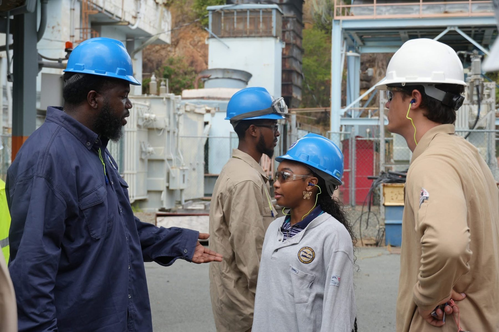

USVI Office of Disaster Recovery, Summer 2025
USVI Solar Farm Engineering Internship

I spent summer 2025 on St. Thomas, my family’s home island, working with the U.S. Virgin Islands Office of Disaster Recovery. Much of the work involved a practical challenge: making infrastructure more resilient to the hurricanes that have repeatedly damaged the island’s electrical grid.
Working alongside the Virgin Islands Water and Power Authority, I helped evaluate ways to strengthen the Donoe Solar Farm, including panel anchoring and foundations designed around winds approaching 150 mph. For my final project, I developed a prototype solar-panel system that sensed wind conditions and rotated on a gimbal to reduce uplift during severe storms.
The reorienting-panel design remained a prototype, with further implementation dependent on funding. Working to protect the power grid of my family's home island made this experience particularly meaningful.